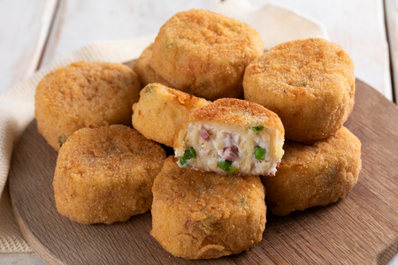
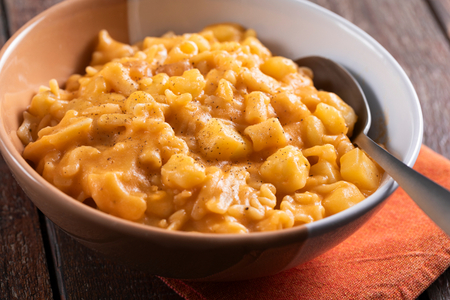
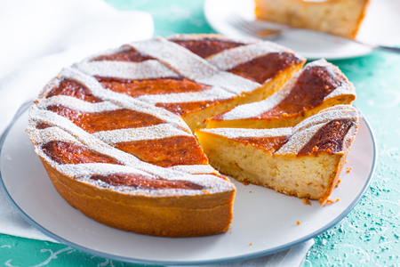

Le frittatine di pasta napoletane sono uno dei simboli più iconici dello street food e della rosticceria di Napoli, nate per recuperare la pasta avanzata e trasformate in un medaglione dorato, croccante fuori e cremoso dentro
https://ricette.giallozafferano.it/Frittatine-di-pasta-napoletane.html
La pasta e patate alla napoletana è uno dei grandi classici della tradizione povera partenopea, un primo piatto rustico, cremoso e avvolgente, celebre per essere azzeccato (ben legato e denso, mai brodoso)
https://ricette.giallozafferano.it/Pasta-e-patate-alla-napoletana.html
La pastiera napoletana è il dolce pasquale più celebre della tradizione partenopea, una torta di pasta frolla fragrante che racchiude un ripieno morbido, ricco e intensamente aromatico.
https://ricette.giallozafferano.it/Pastiera-napoletana.html